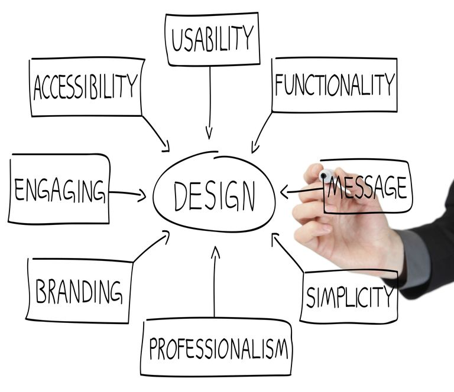

Everything about your website - including the content, the way it looks, and the way it works - is determined by the website design. Web design is a process of conceptualizing, planning, and building a collection of electronic files that determine the layout, colors, text styles, structure, graphics, images, and use of interactive features that deliver pages to your site visitors. Professional Web design helps to make your business appear credible online.
Professional Web design meets the needs of your visitors – telling them quickly what they want to know without unnecessary and confusing design items. Making sure the navigation in your Web site design is predictable, consistent and easy to understand will help build a positive relationship with your visitors.
No matter how appealing your Web site design looks, it won't show up on the search engine results pages if it's not coded in a way that the search engines can read.
e It doesn't take much to turn a customer away. Lengthy loading times, broken links and dropped images are just a few of the web design issues that can be remedied by a professional Web design service
| Language | Info |
|---|---|
| HTML | HTML stands for HyperText Markup Language. Developed by scientist Tim Berners-Lee in 1990, HTML is the "hidden" code that helps us communicate with others on the World Wide Web (WWW). When writing HTML, you add "tags" to the text in order to create the structure. |
| CSS | Cascading Style Sheets (CSS) is a style sheet language used for describing the presentation of a document written in a markup language. |
| JavaScript | JavaScript is an interpreted programming or script language from Netscape. It is somewhat similar in capability to Microsoft'sVisual Basic, Sun's Tcl, the UNIX-derived Perl, and IBM's REXX. ... Script languages generally take longer to process than compiled languages, but are very useful for shorter programs. |